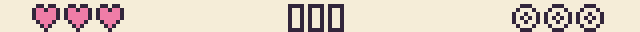
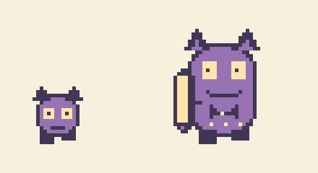
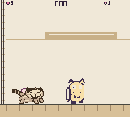
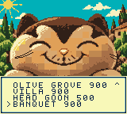

Kittie Has Other Plans: Head Goon build
Current build: living Head Goon contact damage, including recovery and flinching. Hearts and wool use filled and outlined icons, each seven pixels tall like the score digits.
Open local built cartridge · This build folder is local and is not included in Git. Build the source in GB Studio, then open the cartridge in SameBoy or use your Chromatic workflow.

The Head Goon guards the service passage between Villa Terraces and the wedding banquet. This short, separate stage gives Kittie a demanding encounter with its own retry. The banquet and photoshoot remain the ending.
A different goon
He is a larger, rounded member of the regular goon family, with the same little ear tufts, pale eyes and stubby feet. A prominent tray and small accessories show his rank. Raised, lowered and crooked tray poses reveal when a throw will bounce, when he is vulnerable and when Kittie has landed a hit.
On a flat arena floor, his windup marks where he will land. Dodge the committed hop, then throw while his tray is down. After the first hit, he makes two separately signaled hops before opening again.
Three separate hits defeat him. One physical wool ball stays in the room for Kittie to recover; there are no automatic returns or replacement balls. Each hit earns 100 points. Bringing the wool through the exit adds 200, for a maximum of 500.

Title screen
The stage selector shows four rows and scrolls additional stages into view. A or Start opens it; B returns to the full cover.
The cover now matches the original reference’s asymmetric whiskers. His right cheek, on the viewer’s left, curls inward toward his nose; the other side sweeps outward.



October 9 contact adjustment
Recovery and flinching now cause contact damage; defeat stays harmless. Ball physics, animations, attack timings and Kittie’s damage protection are unchanged. Native and web builds passed. Focused host-side checks of the production combat code passed for recovery, flinching, defeat, damage protection, final landing and unchanged ball rebound. This is not a full emulator playthrough; difficulty remains for owner playtesting.
Previous timing adjustment
Tray-down opening: 44 to 72 frames. Patrol interval between attack sequences: 36 to 54 frames. Hop warning, speed and hit count are unchanged. Native and web builds completed; a brief native HUD check passed. Difficulty playtesting is left to the owner, without another verification-agent round.
Previous-build verification
The icon header passed native checks for health and wool counts from zero through three, death and manual retry, completion dialogue, stage transitions and title controls. All five stage entries preserve the reserved glyph tiles. Villa high jumps keep the score visible, with no sprite overflow. The header itself uses no sprite objects.
Icon-header verification evidence · October 4 build manifest.
Before this presentation-only change, the boss passed independent gameplay review and full-game verification. The connected run finished with bests of 900 / 900 / 900 / 500 / 900, reached the photoshoot, and passed cold-boot and save-migration checks. That 8,420-frame replay stayed within the ten-object scanline limit. Those reports precede the latest boss timing adjustment; scoring and the save format remain unchanged.
Current native SHA-256: dafaf3b931679b143af486344a4ec939fe009c483aa0a301fdef5bb4e0a5bcb4. Hardware testing remains with the owner.
Scope
Courtyard → Olive Grove → Villa Terraces → Head Goon → Banquet → photoshoot: five stages, 39 screens. Existing saves retain their earlier stage access and bests. The four-stage cartridge and published v1.0.0 remain unchanged.
The photographer, polar bear friends and economy are outside this build. Encounter design · Previous four-stage build.